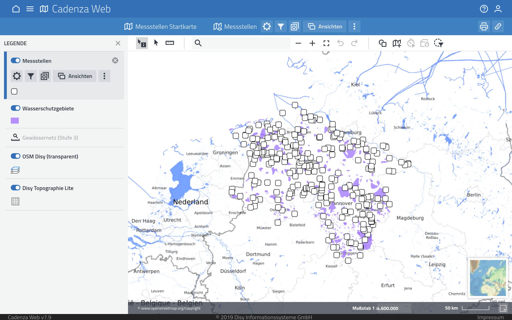
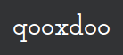

Vue vs Vanilla
Components for the Web
Michael Müller, Johannes Kissel
Accento 2019
Michael Müller
Johannes Kissel
Software Developer
at
in Karlsruhe
Enthusiastic about ...
- 🔗 The Open Web
- 🚲 Cycling
- 🎶 Singing
Cadenza is big ...
... and it's legacy, but ...
... not that kind of legacy ...
... or that kind:
It's vivid and
constantly improved and extended
Frankfurt main station, © Urmelbeauftragter / CC-BY-SA-3.0 (via Wikimedia Commons)
How to be future proof?
-

-

…
Refactoring on the go demands
maximum interoperability
const ELEMENT_NAME = 'd-toggle-button';
class ToggleButton extends HTMLElement {
connectedCallback () {
this.classList.add(ELEMENT_NAME);
this.setAttribute('role', 'button');
this.addEventListener('click', () => {
this.pressed = !this.pressed;
this.dispatchEvent(new CustomEvent('toggle'));
});
}
set pressed (value) {
this.setAttribute('aria-pressed', value);
}
get pressed () {
return this.getAttribute('aria-pressed') === 'true';
}
}
customElements.define(ELEMENT_NAME, ToggleButton);
Plain DOM
const button = document.createElement('d-toggle-button');
button.textContent = 'Button';
button.pressed = true;
button.addEventListener('toggle', () => {
console.log(button.pressed);
});
document.body.append(button);
Constructor
import ToggleButton from 'ui/toggle-button';
// or
const ToggleButton = customElements.get('d-toggle-button');
// constructor
const button = new ToggleButton();
...
jQuery
$('<d-toggle-button>')
.text('Button')
.prop('pressed', true)
.on('toggle', event => console.log(event.target.pressed))
.appendTo(document.body);
Vue
new Vue({
el: '#app',
template: `<d-toggle-button
:aria-pressed="String(pressed)"
@toggle="onToggle">Button</d-toggle-button>`,
data: { pressed: true },
methods: {
onToggle (event) {
console.log(event.target.pressed);
}
}
});
Web Components
The Holy Grail
A solid foundation
with the right level of abstraction
Railroad ties, © Störfix / CC-BY-SA-3.0 (via Wikimedia Commons)
A software component is a
unit of composition with contractually specified interfaces and explicit context dependencies only.
The effect is HUGE!

Button
UI components have a name are reusable
(Zeplin)
(Catalog)